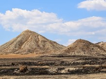
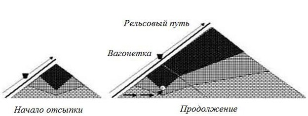
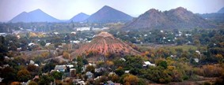
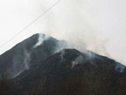
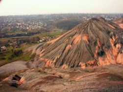

Терриконы
В недрах месторождений залегает не так много полезных ископаемых. Взять, к примеру угольный карьер или шахту: в среднем на 1 тонну добываемого угля приходится 0,7 т пустых пород. Ненужную горную массу предприятия «скидывают» на свободные участки земли, формируя отвалы — терриконы. Террикон (в переводе с французского отвал породы (terri), конический (сonique)) – искусственная насыпь из пустых пород, извлеченных при подземной разработке месторождений угля и других полезных ископаемых. Насыпается с помощью вагонеток, которые поднимаются по наклонным рельсам, уложенным на пологой стороне террикона. Одна сторона террикона – пологая с углом наклона около 20°, противоположная и боковые стороны – крутые (угол наклона 45-60°). Высота конического террикона определяет площадь основания. Так, при высоте 23 м площадь основания составляет 5 тыс. м2, при высоте 45 м – 18 тыс. м2, при высоте 63 м – 55 тыс. м2.
Так получаются терриконы.
Рукотворные горы Донецка
Рекордсменом по количеству терриконов считается Донбасс: сотни рукотворных гор, символизирующих мощь богатейшей на уголь земли, раскинулись на весь регион. Эти полигоны с отходами выглядят как естественный и эстетичный элемент природного ландшафта. Оттого терриконы в народе называют рукотворными горами, холмами, степными исполинами, пирамидами. В общем, как угодно, только не объектами техногенной опасности.
Донбасские шахтёры начали оставлять «следы» после добычи ещё в начале XX века. Первый терриконик на территории бассейна появился в 1905 году в городе Луганске. Спустя столетие их число только в Луганской области возросло до более чем 500. А, допустим, в Донецкой области число степных исполинов вообще близится к 600. Часть из них — около 20-25% — горит прямо сейчас.
Условно терриконы можно разделить по высоте и по периоду образования. Первые терриконы – невысокие, имеют высоту до 50 м и давно заросли мелким кустарником и деревцами. Эти терриконы расположены рядом компактной группой, пологие склоны их обращены в одну сторону. Их характеризует небольшой объём добычи угля на шахтах глубиной до 200 м. Часто они оказываются среди посёлков и районов города. Возле терриконов размещались жилые поселки – Нахаловки. Что означает, такое название, догадаться не трудно – люди строили себе жильё на свободных территориях, ни у кого не спрашивая на то разрешения.
Вообще же, надо сказать, в Донецке терриконов, превышающих гроссмейстерскую высоту в 50 метров – ровно 59.
С увеличением объёмов добычи возрастает глубина шахты, растёт высота терриконов. В результате многолетнего складирования горы породы поднимаются на высоту около 100 метров. На новых шахтах не устраивают конусных отвалов, делая их плоскими, а современные технологии добычи угля позволяют закладывать породу обратно в выработанное шахтное пространство.
Хит-парад терриконов Донецка
| Место | Высота | Шахта / Район | Примечание | |
|---|---|---|---|---|
| 1 | 124 м | Шахта им. Челюскинцев | Уступает только гиганту Шарлотта (Польша, 135 м) |  |
| 2 | 98 м | Шахта им. Челюскинцев | ||
| 3 | 96 м | Шахтоуправление «Петровское» | Два близнеца по высоте, видны с ул. Петровского | |
| 4 | 94 м | Шахта «Трудовская» | Самый западный из самых высоких терриконов | |
| 5 | 91 м | Шахта №12 «Наклонная» | ||
| 6 | 86 м | Шахта №23 | На склон в 1984 году рухнул самолет |
Опасное соседство
Террикон – одновременно и самое красивое, и самое безжизненное место, обладающее особой притягательностью, но таящее в себе опасность.
Внутри терриконов шахт и обогатительных фабрик нередко протекают процессы горения угля без доступа кислорода. Температура этих процессов может достигать 1000-1250 °С. Горячие газы, выделяющиеся при этом во многом аналогичны газам, образующимся при коксовании каменного угля. Днём вершины терриконов дымятся, а ночью виден неяркий огонь – голубоватый, зеленый, желтый – это горит газ. Эти процессы приводят к изменению фазового состава отвальной массы. В вершинной части отвала находятся отложения расплавленных материалов и породы с примесью кристаллов серы, происходит выход горячих газов с максимальной температурой до 500 °С. Здесь можно увидеть фумаролы – отверстия, служащие источниками выхода горячих газов. Каждый житель Донбасса понимает, что существует огромное различие между «живым» и потухшим терриконом. Они различаются по цвету: старые – рыжие от внутренней температуры, новые темно-серые.
Терриконы Донбасса содержат почти всю таблицу Менделеева: до 46% угля, до 15% глиноземов (сырье для получения алюминия), до 20 % оксидов кремния и железа. Содержание редко-земельных элементов в 1 тонне породы достигает: германия – 55 граммов, скандия – 20 граммов, галлия – 100 граммов. Общее количество редкоземельных элементов в отвалах составляет около 230-260 граммов на тонну. В сухое время года терриконы пылят. В пыли, которую ветер несет с террикона, содержатся: никель, свинец, медь, цинк, марганец. Естественный радиационный фон в Донецке повышен. Если ночью над терриконом видно красивое голубое зарево – это результат излучения редкоземельных металлов в атмосферу под воздействием высокой температуры внутри террикона.
Бывали случаи и агрессивного поведения терриконов. Так, майским утром 1966 года в городе Димитрово взорвался террикон. В результате взрыва был уничтожен жилой поселок Нахаловка и погибли более 60 человек, сгорев заживо под завалами раскаленной породы. Причина трагедии – сильные ливневые дожди, спровоцировавшие оползень породного отвала на одном из терриконов. Когда масса в сотни тонн сползла с террикона, открылось жерло «вулкана», и из-за резкой смены температуры и попадания воды произошел взрыв. Несколькими годами раньше подобная техногенная авария произошла на шахте «Трудовская». Обошлось без жертв – жилых домов поблизости не было.
Конечно же терриконы – источники химического и радиологического загрязнения грунта, пылегазового загрязнения атмосферы, которые оказывают экологически опасное воздействие, поэтому некоторые экологи считают, что от терриконов необходимо избавляться. Но существует множество аргументов в пользу сохранения терриконов в черте города. Вот строки из стихотворения:
На полезности стройки поставлен акцент,
Раззвонились о «чуде» газетные строки,
Мол, на пустоши вскоре возникнет торгцентр.
Терриконы – степные седые титаны,
Как же горько признать – вас легко сокрушить.
Но мне кажется: смерть каменистых курганов,
Обернётся Донбассу потерей души.